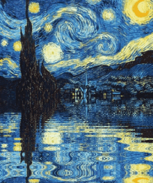
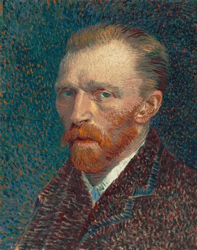
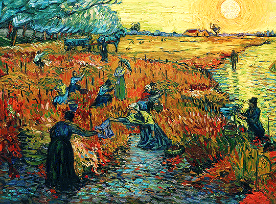

Van Gogh
Olá,
usuário
!
Bem vindo a sua conta!
Estamos trabalhando e nos atualizando para sua melhor experênica.
Gráficos
Sair
Olá
, bem vindo a sua Dashboard!
Veja quantas pessoas curtem o mesmo quadro que você:
Quantos quadros em média do nosso querido Van Gogh você conhece?
(Digite no campo a baixo e calcule!)
Calcular

Noite Estrelada

Auto-Retrato

Vinha Encarnada
Você sabia?
Esses são os quadros mais comentados de Van Gogh
Deixe aqui também seus comentários sobre eles:
Cadastrar comentário